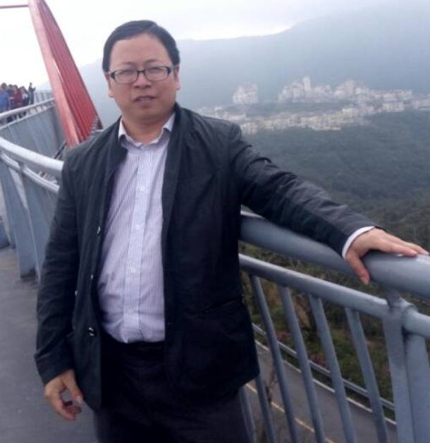

CV Wizard preview
| Ting Lu |  |
Education |
| Qualifications |
| Language skills |
|
Professional experience |
| Profile | I have 14 years of work experience with rich experience in os/390, z/VM, core-banking. I had worked in several projects with good performance, like ATM project of the Bank of East Asia, Loans project of the Bank of China, ATM project of the Kbank (Thailand), and IMEX project of the DBS. During the work in those projects, I conquered many challenges, meanwhile I mastered a lot of technical and business knowledge. From 2012, I joined HONE project, my current role is Architect.My team has very high level Agile maturity and I am leading team on technical skills transferring to Cloud and Devops. |
| Key skills | 1. 8 years experience on COBOL,CICS,JCL and OS/390 system. Be good at the using of FILE-AID, XPED
and DFSORT 2. Strong background knowledge of banking business such as Loans and ATM 3. Excellent customer oriented communication skills. Written communication with English is also no problem. Cantonese is more added. 4. Good knowledge about DB2 application development in OS/390 system. 5. Team leadership skills. 6. Technical skill in REXX, PIPE and z/VM system operation 7. Knowing a little about RPG, RPGLE and IMS. 8. Advanced Agile knowledge, Iteration Manager 9. Basic JAVA, Python, JS and HTML skills |
| Key courses and training | Have attended the trainning of CICS application program II and DB2 application development in OS/390 system. Architecture Thinking TLU2 Agile badge --> explorer |
| Career history |
|
||||||||||||||||||||
| Assignment history |
|
| Prior experience |
|